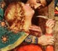
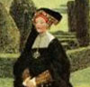
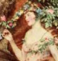
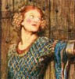

Collective Biographies of WomenAn Annotated Bibliography
Alison Booth
110.
Brickdale, Eleanor Fortescue. Golden Book of Famous Women. London and New York: Hodder & Stoughton, 1919.
Also listed under Fortescue-Brickdale, and as Eleanor Fortesque Brickdale's Golden Book of Famous Women.
Search OCLC WorldCat for this title.
Search Google Books for this title.
Brickdale, Eleanor Fortescue. Golden Book of Famous Women. London and New York: Hodder & Stoughton, 1919.
Also listed under Fortescue-Brickdale, and as Eleanor Fortesque Brickdale's Golden Book of Famous Women.
NOT=fiction. A mix of historical fiction and biography, including literary heroines. Elegant album in blue cloth with golden lettering and decoration: a frieze of early-modern figures strolling through an orchard on the front cover. 200 pp. of large type and wide margins. Pasted-in color illustrations by “E.F.B.”: mostly of a solitary woman in a pastoral or garden setting. Exceptions: Abelard embraces an ecstatic Eloise; Beatrice and entourage ascend a formal outdoor staircase to meet Dante and friends facing viewer at summit of picture. Brief excerpts from famous authors; many subjects entirely fictional, e.g. Becky Sharp; Maggie Tulliver. See also Pop Chart
-
 Olivia
Olivia -
Eloisa
-
Fair Rosamond
-
 Beatrice
Beatrice -
 Laura
Laura -
 Joan of Arc
Joan of Arc -
 Queen Katherine
Queen Katherine -
 The Queen’s Marie
The Queen’s Marie -
 Una
Una -
Titania
-
 Rosalind and Celia
Rosalind and Celia -
 Guinevere
Guinevere -
 Maud
Maud -
Kate Barlass
-
 St. Catherine
St. Catherine -
 St. Clare
St. Clare
Search OCLC WorldCat for this title.
Search Google Books for this title.